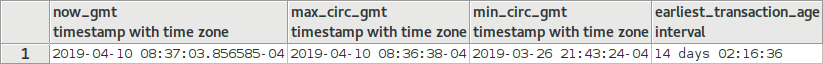
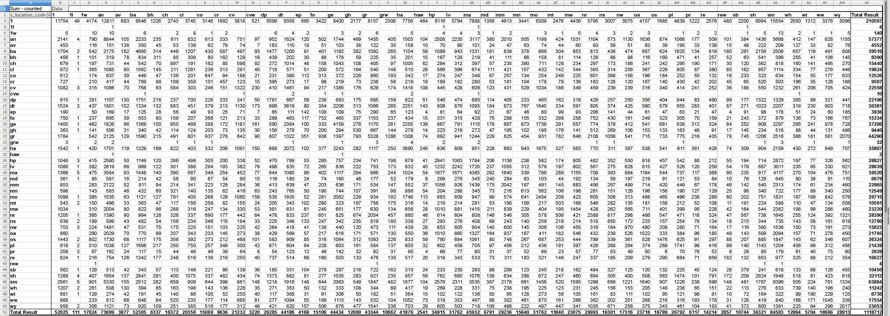
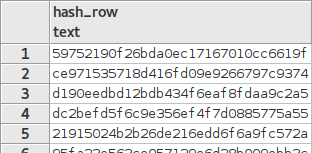
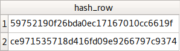
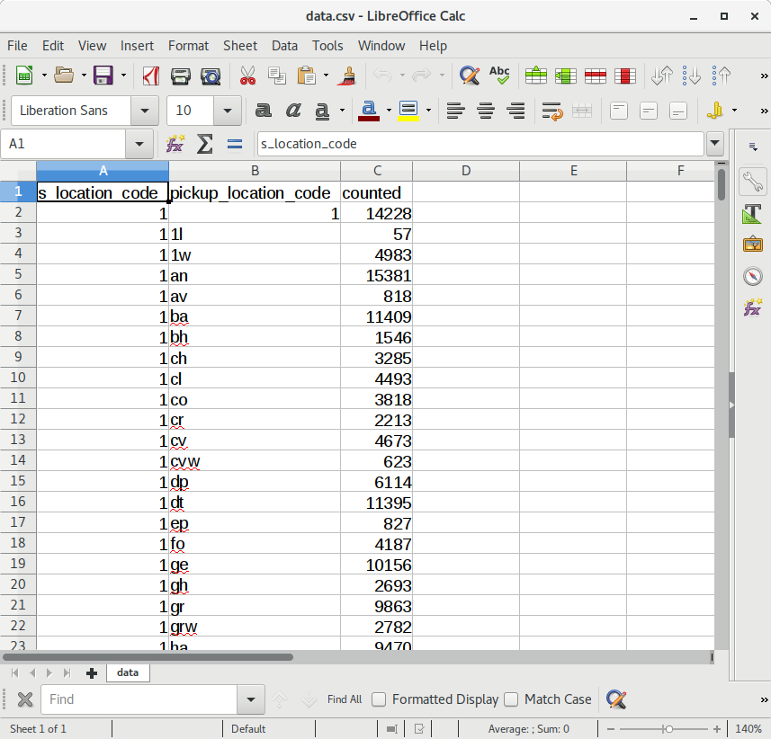
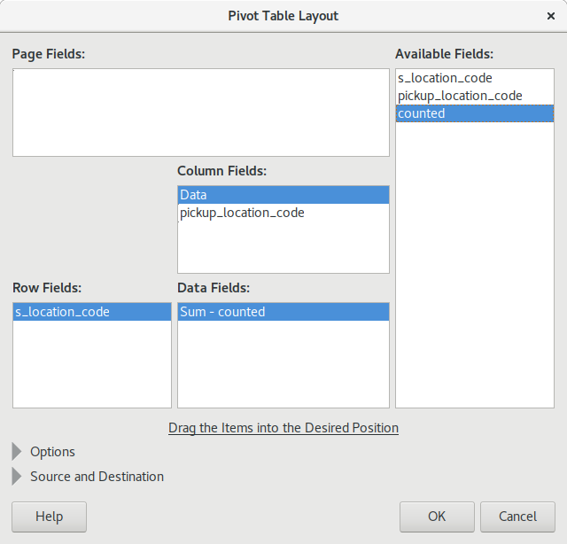
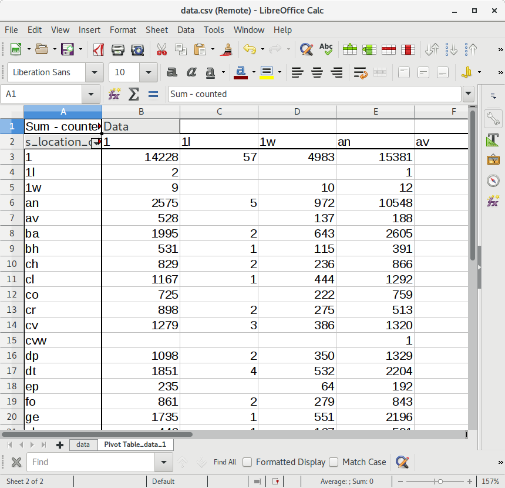

Quick Background
- Sierra’s Direct SQL Access feature allows us to:
- Quickly and efficiently target and extract real-time data from the Sierra ILS.
- Organize data in logical and useful ways
Quick Background (cont.)
- Why save / preserve data from Sierra? (cont.)
- Cache Sierra data:
- For use in an application instead of running an “expensive query” to deliver content
- For use in an application where holding onto data which may otherwise be destroyed or transformed by the Sierra application itself
Understanding Sierra’s database views and data
- Some data in Sierra stays more static
(think of a “receipt”, or log of transactions)
Understanding Sierra’s database views and data (cont.)
- Circulation transactions are created in the database table and remain static
- Rows are deleted from the table after a certain period of time (2 weeks is the default, but this can be extended by iii upon request)
-- get some info about our circ_trans dates
SELECT
NOW()::TIMESTAMP WITH TIME ZONE as now_gmt,
MAX(c.transaction_gmt)::TIMESTAMP WITH TIME ZONE AS max,
MIN(c.transaction_gmt)::TIMESTAMP WITH TIME ZONE AS min,
AGE(MIN(c.transaction_gmt)) AS earliest_transaction_age
FROM
sierra_view.circ_trans as c

Understanding Sierra’s database views and data (cont.)
- Other data is more variable or is a direct representation that describes a particular state of a record or process in the ILS.
Understanding Sierra’s database views and data (cont.)
- The state of the hold is defined in the Sierra database
-
Data changes depending on the state or status
of the hold, and is then removed from the database when the
hold is deleted, filled or expires
-- this will select Ray Voelker's hold information from the
-- Sierra SQL database
SELECT
h.id,
h.patron_record_id,
h.record_id,
h.status,
h.pickup_location_code
FROM
sierra_view.hold as h
WHERE
h.patron_record_id = 481038535591;
How to cache / transform / preserve data from Sierra?
- No shortage of options!
- pgAdmin is a popular choice for a desktop client
www.pgadmin.org
- "Execute query, write result to file"
Creates a .csv file from the results
How to cache / transform / preserve data from Sierra? (cont.)
- Many programming languages provide access to PostgreSQL via their libraries:
How to cache / transform / preserve data from Sierra? (cont.)
- My method consists of the following overview:
- Use Python to connect to Sierra’s database
- Issue SQL statement on Sierra's database to target and compile the data for extraction
How to cache / transform / preserve data from Sierra? (cont.)
- My method consists of the following overview (cont.):
- Export result data to either a .csv file, and/or directly into a SQLite database
- .csv files are easy to later load into an SQLite database, spreadsheet, or other data warehouse tool
How to cache / transform / preserve data from Sierra? (cont.)
SQLite Database: sqlite.org
SQLite is a C-language library that implements a small, fast, self-contained, high-reliability, full-featured, SQL database engine.
How to cache / transform / preserve data from Sierra? (cont.)
SQLite Database (cont.)
- SQLite database engine is a great tool for caching data:
- Stores and organizes large amounts of data quickly and efficiently
- You don’t have to set up and maintain a server (data is portable; entire database is contained in a single, cross-platform file)
How to cache / transform / preserve data from Sierra? (cont.)
SQLite Database (cont.)
- Ability and flexibility to build SQL queries and applications that directly use the data that you’ve collected
- Has a useful desktop tool: sqlitebrowser.org
- It’s included in the Python Standard Library!
# Python sample code to create database,
# create a table, and then insert some data
# note: sqlite3 is part of the Python Standard Library
import sqlite3
# create the database
conn = sqlite3.connect('example.db')
cursor = conn.cursor()
# create the table
cursor.execute("""CREATE TABLE IF NOT EXISTS `data`
( `id` INTEGER PRIMARY KEY AUTOINCREMENT,
`input` TEXT )""")
# insert some data
cursor.execute("""INSERT INTO data (`input`)
VALUES ('sample text')""")
# commit and close the connection
conn.commit()
conn.close()
Examples:
- Collection Analysis / Circulation Data Analysis
- intended for use with the CollectionHQ service, but can be adapted for local use
- Patron Savings Calculator
- intended to display information on the Encore patron account information page about how much money has been "saved" by using the library
Examples: (cont.)
- Hold Shelf Delivery Matrix Report
- intended to produce a spreadsheet report of items for hold shelf locations (ready for patron pickup) and from where they originated
- Mapping Geo Data from Patron Address Data and Circulation Transaction Data
- intended to take geocoded patron address data and produce a visualization by plotting it on a map
Example 1
Collection Analysis / Circulation Data Analysis
- github.com/plch/collection-analysis
- This application was built for the purpose of automatically preserving and sending data from the Sierra database to the CollectionHQ service via FTP
Collection Analysis / Circulation Data Analysis (cont.)
- Three main groups of data are targeted for export:
- Bibliographic Record Data:
temp_table-bib_data.sql
Fields exported include: bib record number, control numbers (var fields tagged 'o'), isbn, call numbers, and a few other metadata fields related to the bib record
Collection Analysis / Circulation Data Analysis (cont.)
- Three main groups of data are targeted for export: (cont.)
- Item Record Data:
temp_table-item_data.sql
Fields exported include: item record number, bib record number, circulation information, price, and a few other metadata fields related to the item record
Collection Analysis / Circulation Data Analysis (cont.)
- Three main groups of data are targeted for export: (cont.)
- Hold Data:
temp_table-hold_data.sql
Weekly snapshot of bib-level holds. It is organized by title (bib record number), and then each title has a list of holds with related metadata for each hold (patron number, pickup location, created date, expiration date, etc)
Collection Analysis / Circulation Data Analysis (cont.)
- Overview of the process:
- Create and open .csv files to hold data output and/or open local database (if it’s useful to place data into local SQLite database)
- Connect to remote Sierra database, and create the temporary tables that will be used for exporting
Collection Analysis / Circulation Data Analysis (cont.)
- Overview of the process (cont.):
- Generate data output from the Sierra database temporary tables, and write the output to a .csv file and/or to a local SQLite database
- Send data via FTP
- full export script
can be found in the public github repository
for this project
Example 2
Patron Savings Calculator
- github.com/plch/patron-savings-calculator
-
This application was designed to work with the iii discovery layer Encore's account detail page,
to display how much a patron has "saved" by borrowing from the library
Patron Savings Calculator (cont.)
-
Cached “savings” information is based on the patron record number
and can be output in multiple formats (based on this application's custom URL endpoints):
- JSON
/api/v1/patron_savings/2198439
{
"count_titles": 118,
"min_date_epoch": 1534957500,
"patron_record_num": 2198439,
"total_savings": 2109.2799999999997
}
Patron Savings Calculator (cont.)
-
Cached “savings” information is based on the patron record number
and can be output in multiple formats (based on this application's custom URL endpoints):
Patron Savings Calculator (cont.)
- About this very simple RESTful API
-
Written as a Python / Flask application:
Patron Savings Calculator (cont.)
- About this very simple RESTful API (cont)
Patron Savings Calculator (cont.)
- About this very simple RESTful API (cont)
Patron Savings Calculator (cont.)
About the `update.py` script :
- Script starts by looking at the last entry it received from the Sierra database
- A query is constructed to extract relevant data from the Sierra database that is more recent than that last entry in the local database
- The local database is updated with the fresh data from the Sierra database
Patron Savings Calculator (cont.)
A note about privacy / protection / obfuscation of this data:
- No title information is saved in the local database, other than a hashed bib record id
- Hashed bib record id is stored to avoid duplicating the price information when a title is checked out multiple times, and to differentiate titles from one another in the local database
Patron Savings Calculator (cont.)
A note about obfuscation with this data (cont.):
- No patron information, other than the patron record number, is stored in the local database
- Only price and number of titles checked out are surfaced via the RESTful API
Example 3
Hold Shelf Delivery Matrix Report
- github.com/plch/plch-holds-shelf
- The purpose of this application is to create a spreadsheet that displays
items delivered to a hold shelf location, and from what location they came
Hold Shelf Delivery Matrix Report (cont.)

Hold Shelf Delivery Matrix Report (cont.)
SELECT FROM `sierra_view.hold` WHERE `status` =
| code |
definition |
| "b" |
Bib hold ready for pickup |
| "j" |
Volume hold ready for pickup |
| "i" |
Item hold ready for pickup |
Hold Shelf Delivery Matrix Report (cont.)
- Source location:
-
`checkin_statistics_group_code_num`
found in `sierra_view.item_record` table view
Hold Shelf Delivery Matrix Report (cont.)
- Destination location:
- `pickup_location_code`
found in `sierra_view.hold`
Hold Shelf Delivery Matrix Report (cont.)
-
Note: the source value of `location_code` comes from
`sierra_view.statistic_group_myuser`
using `checkin_statistics_group_code_num`
effectively giving us the pickup location from the stat group code num
Hold Shelf Delivery Matrix Report (cont.)
- Do not insert duplicate rows of hold data...
- We could build a complicated set of comparisons of the remotely selected data to our local data ...
- Or, we could let the databases do all the work!
- Create a hash of the entire hold row, use that value as the unique primary key in the local database table
Hold Shelf Delivery Matrix Report (cont.)
Local SQLite table creation (simplified)
-- local SQLite table creation (simplified) ...
CREATE TABLE IF NOT EXISTS "data" (
`hash_row` TEXT UNIQUE PRIMARY KEY
-- more columns created below ...
);
Hold Shelf Delivery Matrix Report (cont.)
Remote Sierra database query (simplified)
-- remote Sierra database query (simplified) ...
SELECT
MD5(CAST((h.*) AS TEXT)) AS hash_row
-- more columns of data selected below
FROM
sierra_view.hold AS h
WHERE
h.status IN(
'b', 'j', 'i'
);
Hold Shelf Delivery Matrix Report (cont.)
Remote Sierra database query (simplified) output:

Hold Shelf Delivery Matrix Report (cont.)
Local SQLite table inserting the retrieved data (simplified):
INSERT OR IGNORE INTO data (
hash_row
)
VALUES ('59752190f26bda0ec17167010cc6619f'),
('59752190f26bda0ec17167010cc6619f'),
('ce971535718d416fd09e9266797c9374');
SELECT * FROM DATA;

Hold Shelf Delivery Matrix Report (cont.)
- Overview of the process: (this should look familiar)
- Connect to our local database, and create table if it doesn’t exist. Also, establish connection to the remote Sierra database
- Query the Sierra ‘hold’ table for rows that have status of ‘i’, ‘j’, or ‘b’; this indicates that there is a item hold, volume hold, or bib hold ready for pickup
Hold Shelf Delivery Matrix Report (cont.)
- Overview of the process: (cont.)
- Insert retrieved rows (or ignore duplicate rows as explained previously) to the local SQLite database, then close all connections
- Set the update of local data to happen frequently (every 5 minutes via CRON is a good method for doing this)
Hold Shelf Delivery Matrix Report (cont.)
Hold Shelf Delivery Matrix Report (cont.)
- Exporting / Producing the report (cont.)
- Import the .csv file into LibreOffice Calc (or Excel) and perform a pivot on the data:
Hold Shelf Delivery Matrix Report (cont.)
- Exporting / Producing the report (cont.)

Hold Shelf Delivery Matrix Report (cont.)
- Exporting / Producing the report (cont.)

Hold Shelf Delivery Matrix Report (cont.)
- Exporting / Producing the report (cont.)

Example 4
Mapping Geo Data from Patron Address Data and Circulation Transaction Data
- The purpose of this process is to plot patron locations and branch locations on a map based on latitude / longitude coordinates derived from mailing address data
- This is a work in progress!
Mapping Geo Data (cont.)
- Cached data is contained in an SQLite database
-
Circulation data
(weekly export of `sierra_view.circ_trans` table view)
-
Patron data
(weekly export of relevant patron information from multiple table views)
Mapping Geo Data (cont.)
-
Geocoding Patron Street Addresses:
- Patron address data (patron_record_id, street number, street name, city, zip) are exported to a .csv file
Mapping Geo Data (cont.)
- Possible Geocoding Services:
Mapping Geo Data (cont.)
-
SmartyStreets has some very user-friendly services for bulk upload / download of address data for verification and geocoding
-
SmartyStreets may be able to offer a discounted / free service to libraries that allow for
bulk verification / geocoding as well as on-the-fly verification and auto-corrected address
inputs for things such as web input forms
Mapping Geo Data (cont.)
- SmartyStreets list service returns .csv data back with relevant address information, identified by the unique ID (`patron_record_id`) that was provided
- We may easily load this into the local SQLite database with the import csv feature (from the GUI)
Mapping Geo Data (cont.)
- There are very good data analysis / visualization tools available for Python:
- PyViz
pyviz.org
- A Conda metapackage "pyviz"
- Makes data visualization in Python easier to use